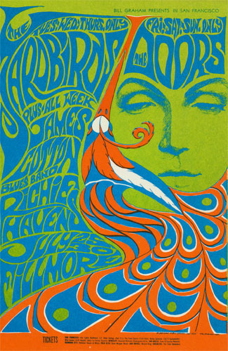
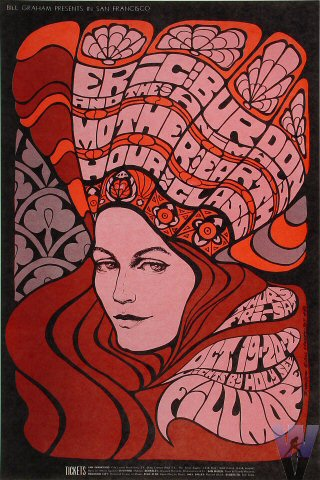
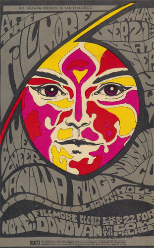

.

Hey there. We come from the Fillmore Theatre. We were born back in 1967 with a very specfic purpose. We didn't just give information for a show, but we captured what the essence of a show could be.
BILL GRAHAM #75
YARDBIRDS & THE DOORS
7/25-30/1967
BONNIE MACLEAN

We represented the people you would meet, what kind of far-out trip you would have, or even reveal the mysteries of the universe. We were an acid test pop quiz on a telephone pole.
BILL GRAHAM #89
ERIC BURDON & THE ANIMALS
10/19-21/1967
BONNIE MACLEAN

Now many of us live at the Letterform Archive. Protected in plastic slips or hung up on the wall, with a unique lighting style similar to this. You may have missed the show but you can always enjoy us here.
BILL GRAHAM #84
BLUE CHEER. VANILLA FUDGE
9/21-23/1967
BONNIE MACLEAN